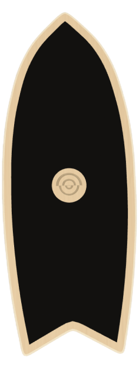
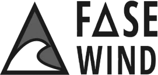
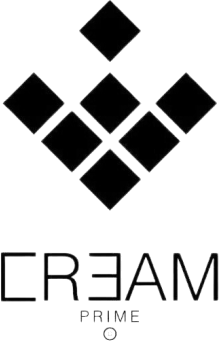
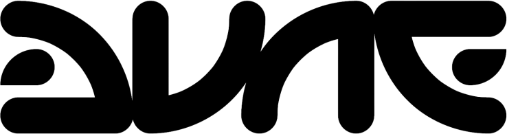
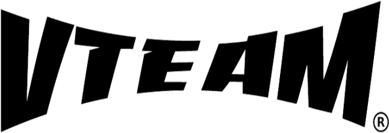
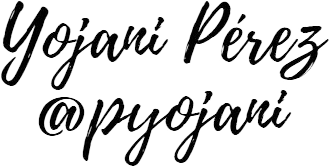

Personalitza la teva taula
Troba el teu equilibri, en 3 passos
Balance boards fetes a mà, una a una. Tria la forma, el disseny i el color en tres passos i emporta't una taula única.

Tria la forma
Peix, Lasai, La Free o Keki — segons el teu nivell.
Tria el disseny
Fusta, fullcolor o franges — l'acabat que t'agradi.
Tria el color
8 colors per fer-la 100% teva.
Tria la forma
Peix, Lasai, La Free o Keki — segons el teu nivell.
Tria el disseny
Fusta, fullcolor o franges — l'acabat que t'agradi.
Tria el color
8 colors per fer-la 100% teva.
Edició limitada
Veure mésPacks i edicions especials
Veure mésCol·laborem amb





Per què un balance board?
Equilibri i coordinació
Entrenes des dels turmells fins al cervell: oïda interna, cerebel i propioceptors treballen junts per mantenir-te dret.
Tot el cos en moviment
Cames, malucs, esquena i core es tonifiquen amb sessions curtes i divertides, cada dia i on vulguis.
Entrena en sec
Perfecte per mantenir el nivell de surf, snow o skate quan no pots sortir a practicar.